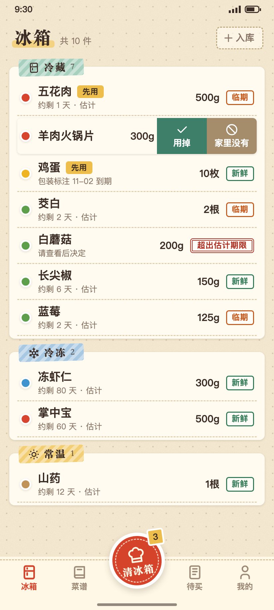
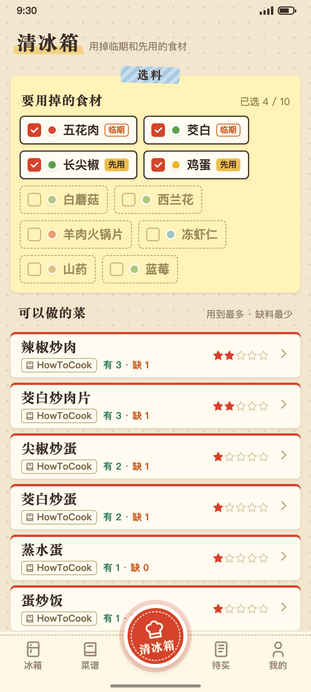

轻松入库
导入购物截图、粘贴订单文字、拍小票或手动添加；识别后由你确认和修正。
给认真过日子的厨房，一点好记性
让冰箱里的食材，赶上下一顿饭。记住买过什么，看看哪些该先用，再从现有食材里找一道想做的菜。
看看它怎么工作

界面示意图 · 数据为虚构演示内容
一件厨房里的小事
趁鲜为负责买菜、也负责做饭的人设计。减少逐项记账的麻烦，让“冰箱里有什么”更容易变成“今天做什么”。
导入购物截图、粘贴订单文字、拍小票或手动添加；识别后由你确认和修正。
食材按冷藏、冷冻、常温整理。临期和“先用”提示醒目，保质期估计会说明依据。
挑出想用掉的食材，按匹配程度看看菜谱；决定之后，再把缺的材料放进待买清单。
产品原则
购物记录不等于实时库存，估计也不等于食品安全结论。趁鲜会呈现信息从哪里来，让你随时修正。